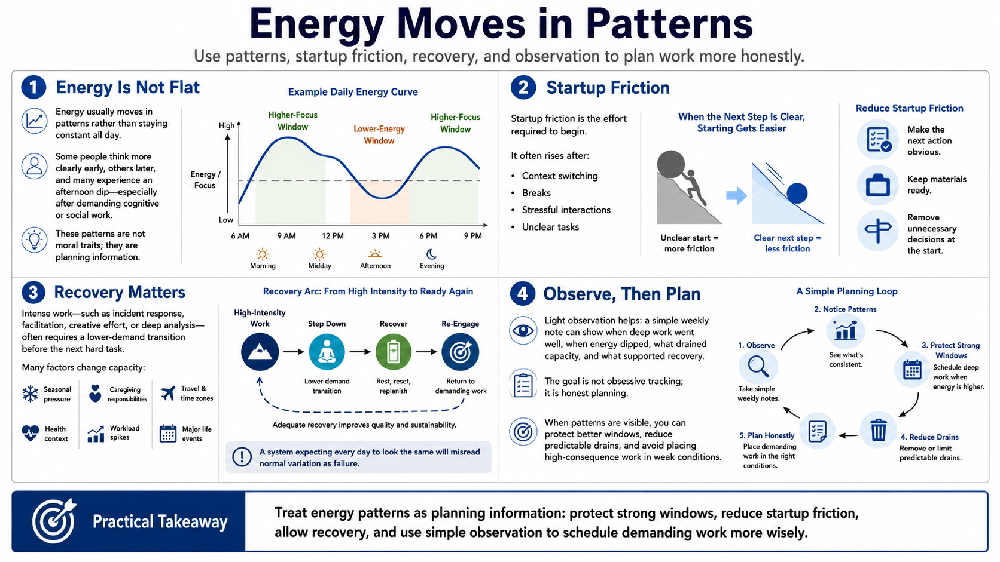

Energy Cycles and Personal Patterns
Connecting to LMS... Progress: in progress

Narration
Energy usually moves in patterns rather than staying flat all day. Many people have windows when focus comes more easily and windows when startup friction is higher. Some people do their clearest thinking early. Others become sharper later. Some notice an afternoon dip, especially after intense cognitive or social work. These patterns are not moral traits. They are planning information.
Startup friction is the effort required to begin. It is often higher after a context switch, a break, a stressful interaction, or an unclear task. Good systems reduce startup friction by making the next action obvious, keeping materials ready, and avoiding unnecessary decisions at the moment work should begin. Energy-aware planning pays attention to the start of work, not just the deadline.
Recovery after intense work also matters. A difficult incident, a long facilitation session, a creative push, or several hours of deep analysis may require a lower-demand transition before the next demanding task. Seasonal pressures, caregiving responsibilities, travel, health context, workload spikes, and major life events can all change capacity. A system that assumes every day should look the same will misread normal variation as failure.
Observation helps without becoming obsessive. A simple weekly note can identify when deep work went well, when energy dipped, what drained capacity, and what helped recovery. The purpose is not to measure every sensation. The purpose is to plan more honestly. When patterns are visible, people can protect better windows, reduce predictable drains, and avoid forcing high-consequence work into weak conditions.